A estética
da Ana
Uma noite editorial pintada à mão: lápis em papel creme, lírios, brilhos de quatro pontas e corações de vidro, sobre um escuro azul-esverdeado.
Montei a partir de tudo que você escolheu e recusou no site, das suas artes e das referências que mandou. Cada seção termina com uma pergunta. Responde só onde discordar, que eu ajusto o documento e passo a seguir ele em tudo daqui pra frente.
Delicada, feita à mão, noturna
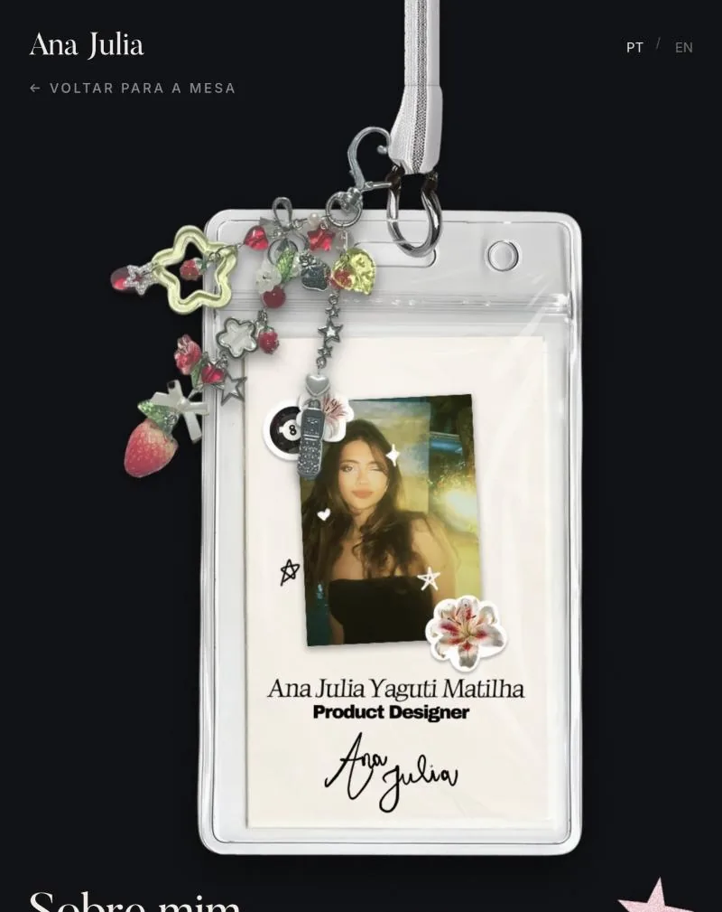
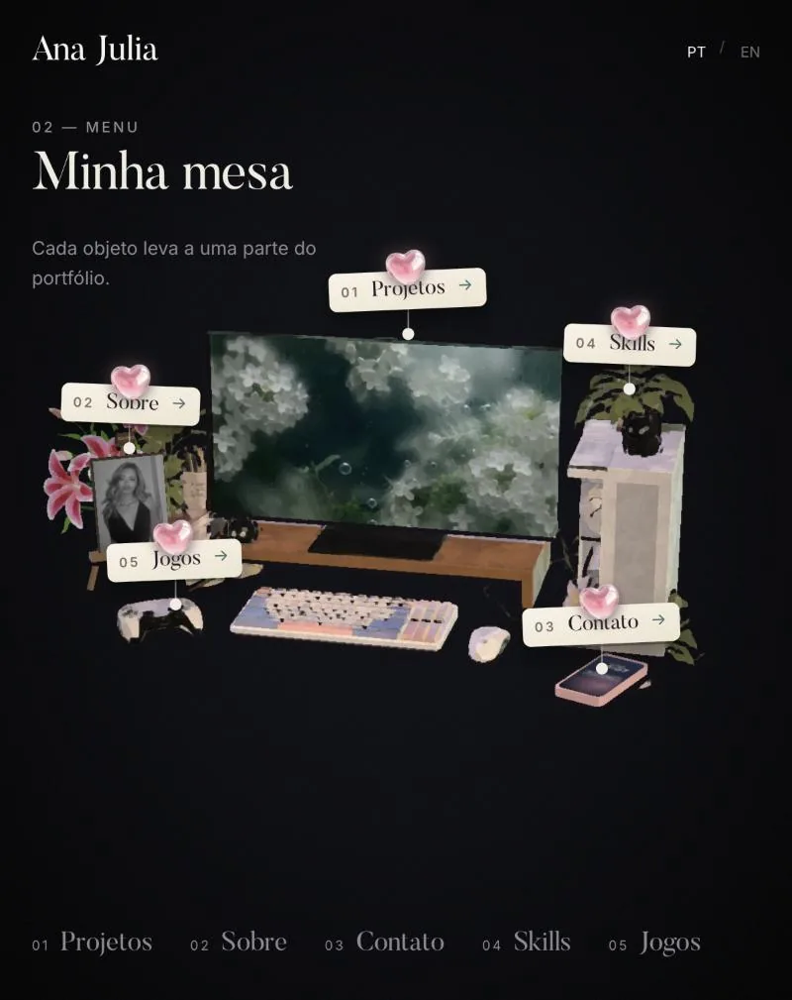
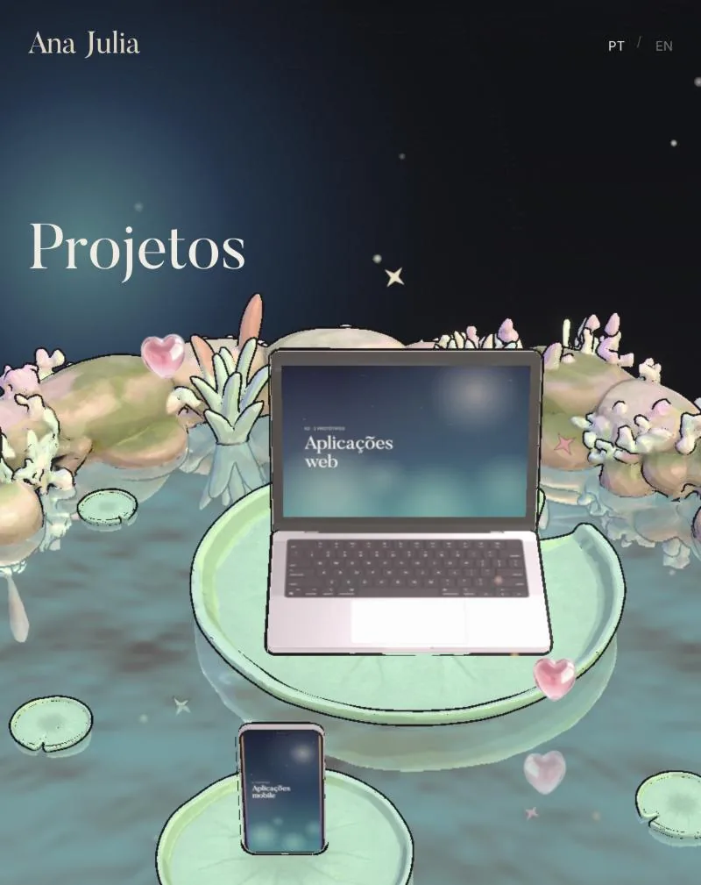
- romântica com um toque gótico
- coquette nos detalhes
- editorial no layout
- pintada / desenhada
- translúcida (vidro, água, névoa)
- pastel sobre escuro
Isso descreve você? Falta alguma palavra, ou alguma está errada?
O traço é o centro
O que mais te representa é o seu lápis: olhos muito detalhados, o lírio-aranha, a adaga ornamentada, o ramo de espinhos com corações e os brilhos de quatro pontas. Limpei as fotos para virar tinta sobre papel, sem sombra nem tom amarelado.
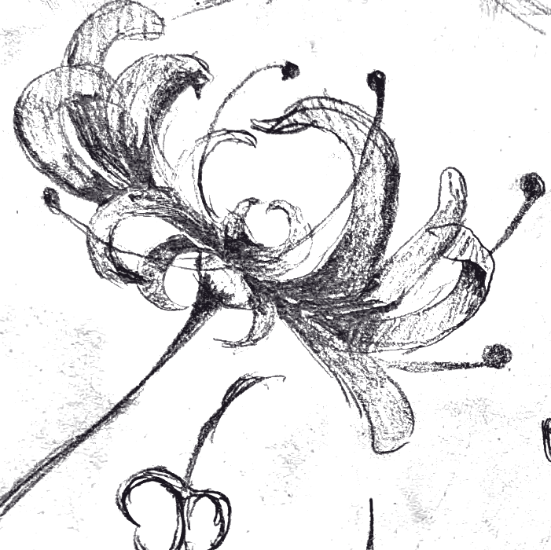
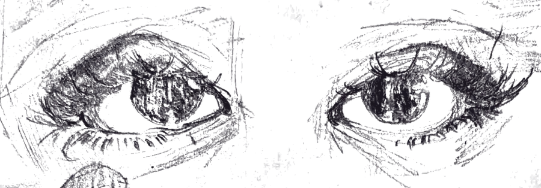
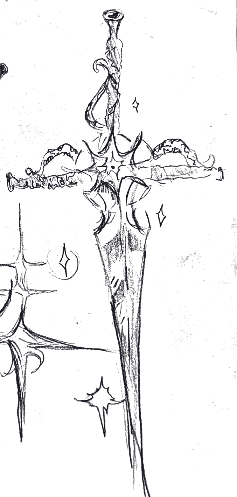
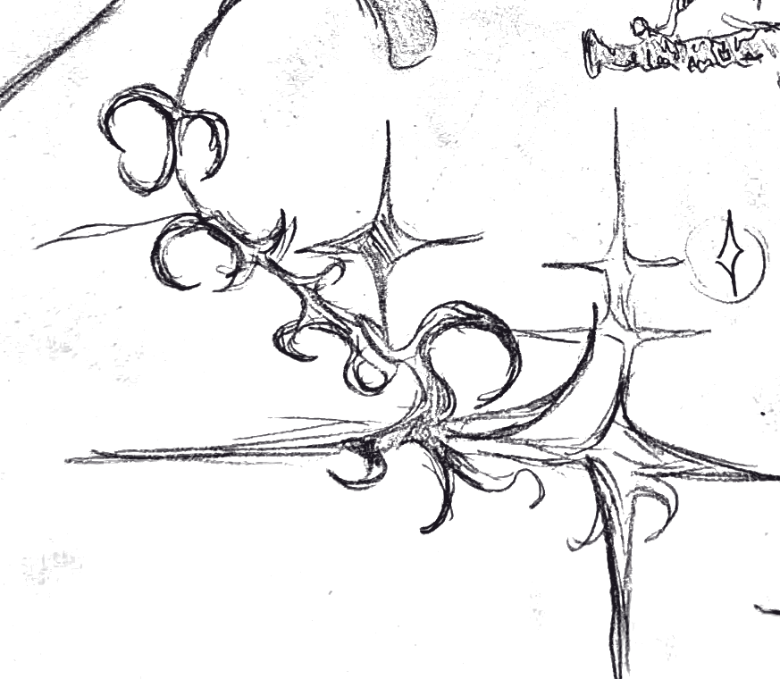
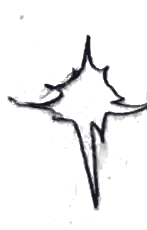
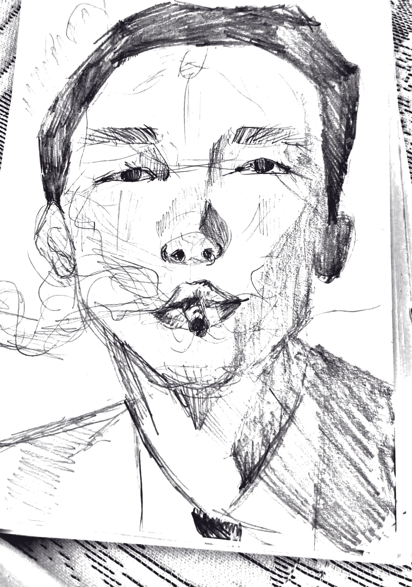
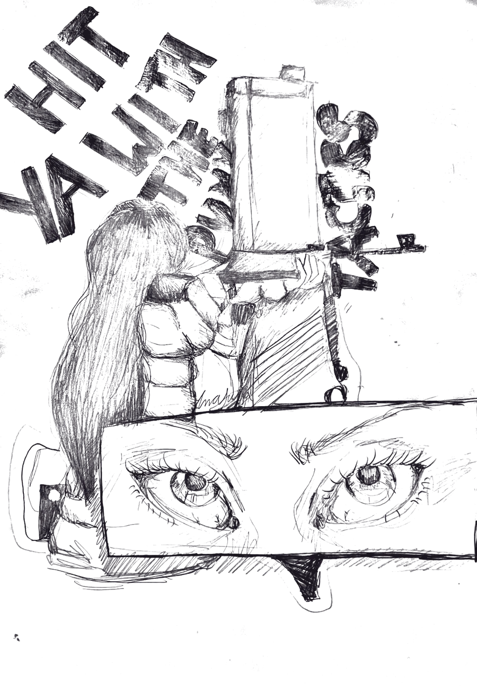
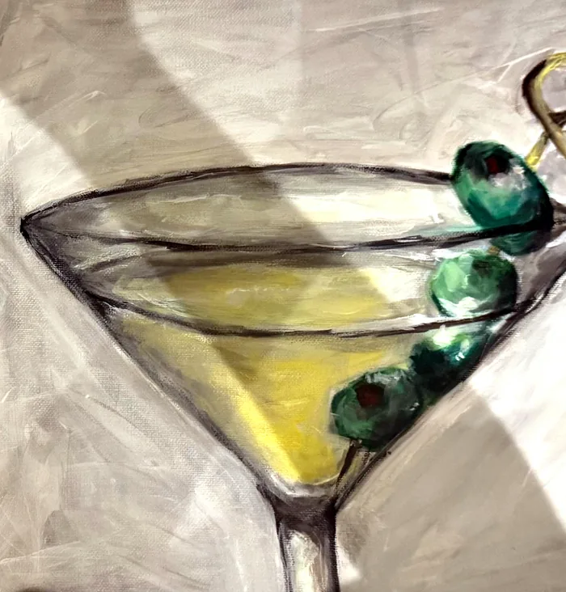
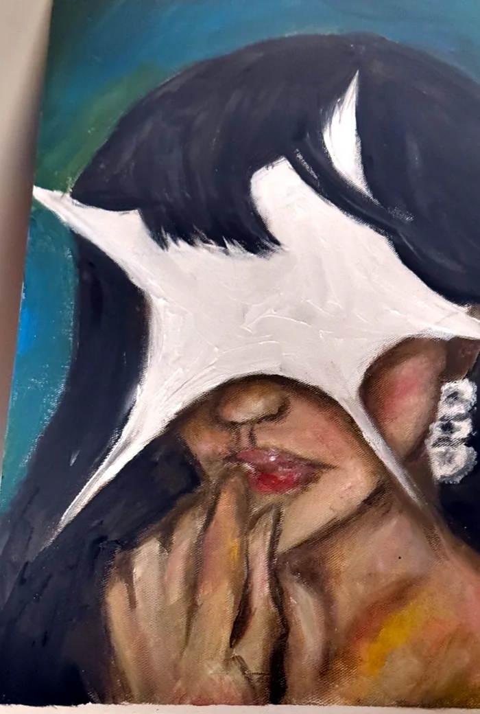
Posso usar os desenhos a lápis como a "assinatura visual" do site inteiro (ornamentos, divisores, ícones)? E as pinturas: ficam de fora, ou entram só numa galeria?
Escuro azul-esverdeado, papel creme, rosa de vidro
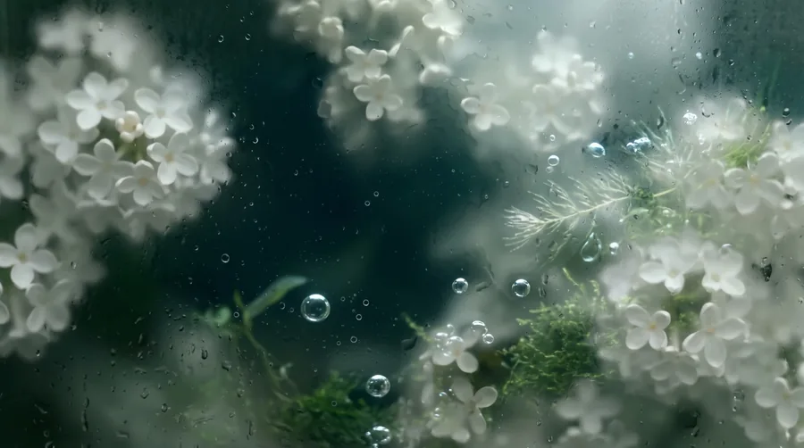
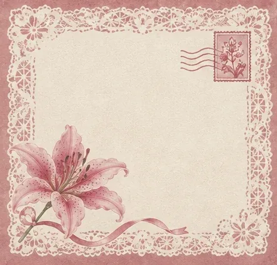
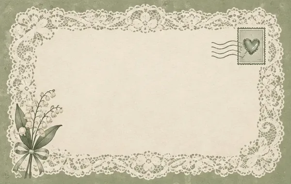
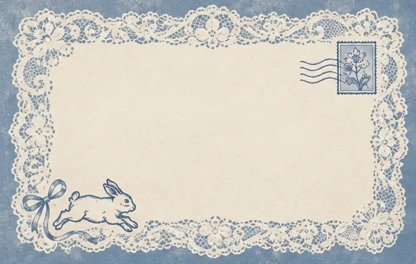
Roxo e ameixa saíram (você trocou o céu roxo por azul-verde, e não gostou do verso ameixa). Confirmo: nada de roxo dominante?
Serif grande, rótulo pequeno, um pouco de mão
Butler como voz principal está certo? Quer mais escrita à mão, ou ela fica rara?
Coisas reais, iluminadas de leve
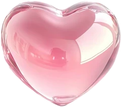
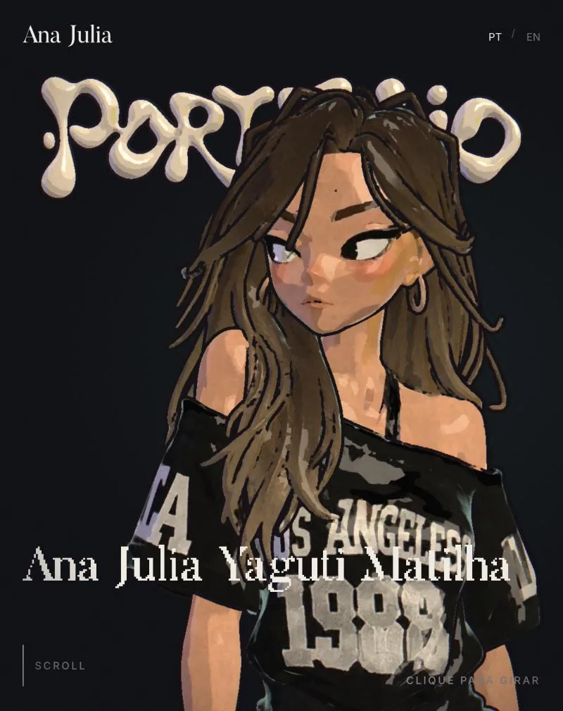
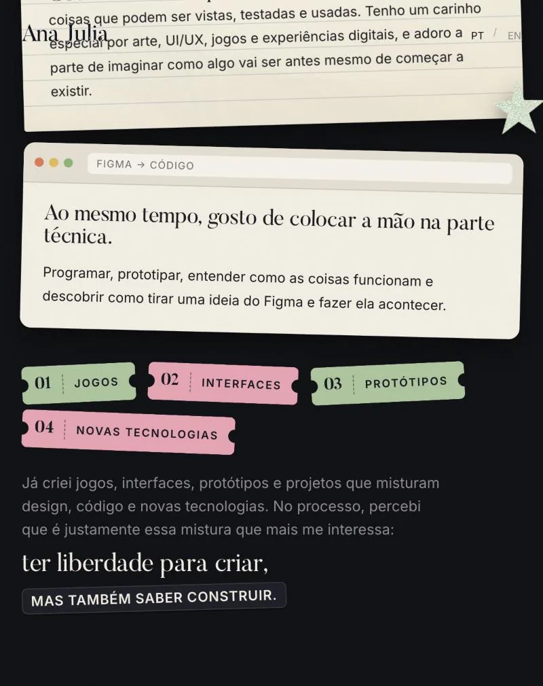
Regra de luz que você definiu: "bem fraquinho, só para ter imersão". Reflexos, brilhos e sombras sempre sutis; nada que pisque, siga o mouse ou risque a tela.
Seguir
- O lírio desenhado no cartão"adorei como a flor ficou"
- Painterly sutil na lagoa e nas folhas"gostei mais, mas deixa mais sutil"
- Objetos reais como interface: crachá, postais, etiquetas, cartão
- Título grande em Butler ocupando o espaço
- Corações de vidro e lírios espalhados com parcimônia
- Água cristalina com reflexo e ondinhas no mouse
Evitar
- Bagunça / excessomural de cortiça cheio: "fica muito bagunçado"
- Vermelho ou roxo dominantepaleta vermelha, céu roxo, verso ameixa
- Efeitos fortesfaixas de luz, brilho seguindo o mouse, grade de pixels
- Coisas genéricas"feio e nada criativo", "cores mortas", ilhas, estrela estática
- Adesivos soltos e sublinhados à mãoremovidos do Sobre
- Texto explicando o conceitoa ideia tem que se explicar sozinha
Três caminhos para o verso
Mesmo papel creme da frente (o escuro não é você), sem os desenhos que você pediu para tirar. O impacto vem da frase grande. Escolhe um, ou mistura.
conversar?
conversar?
conversar?
Qual verso você quer: A, B ou C?